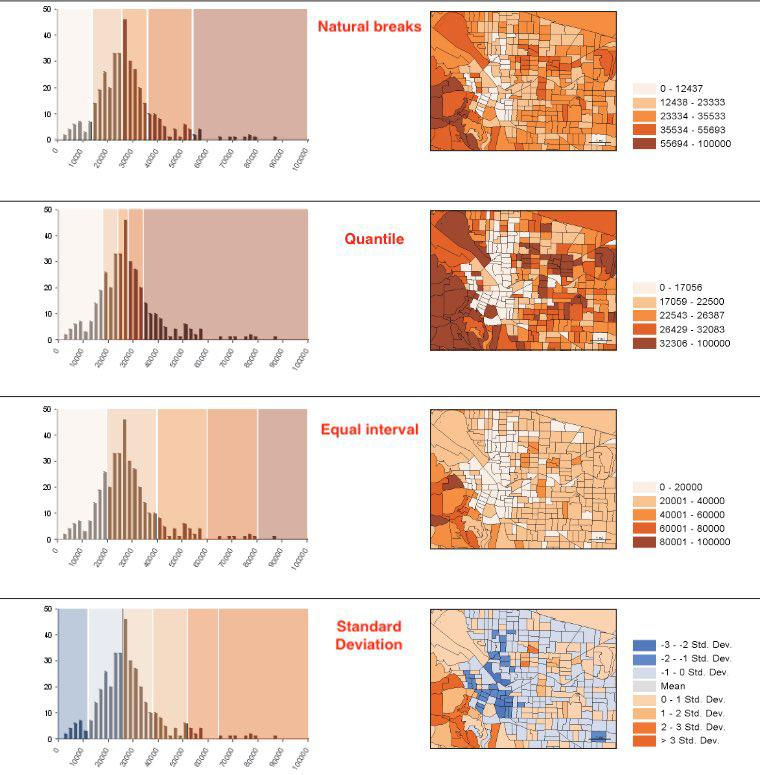
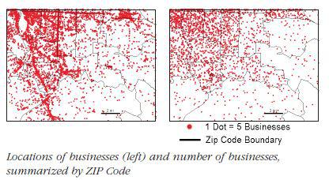
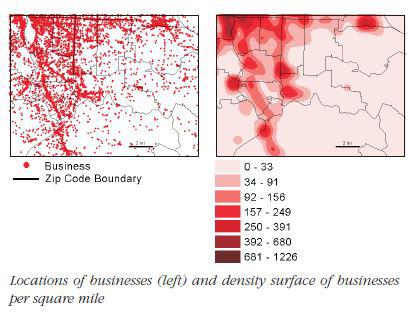
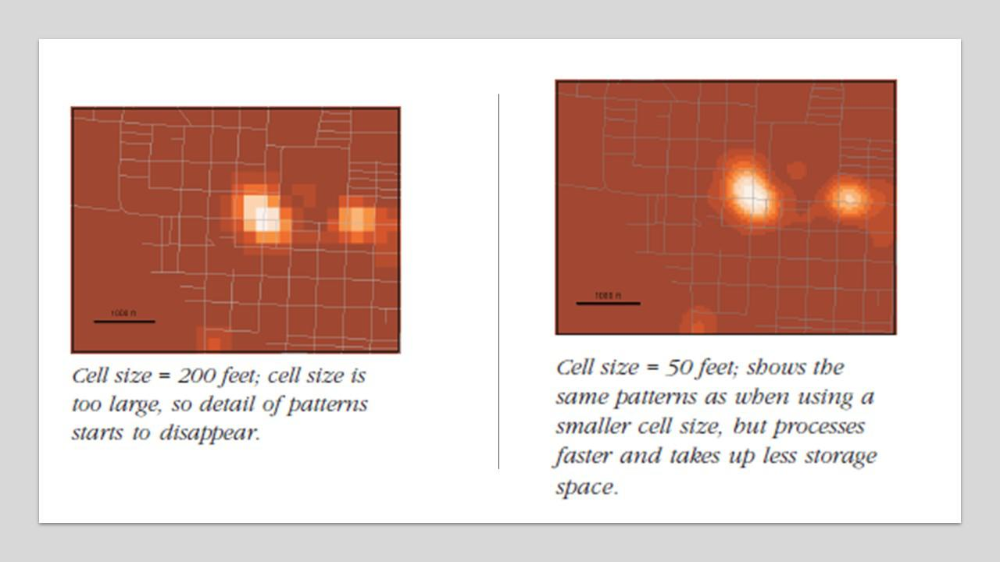
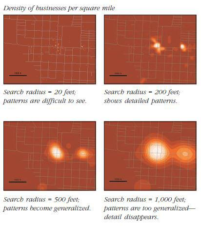

Guide to spatial analysis - Introduction
A set of notes explaining the core of spatial analysis. Most of the content in this page are excerpts from Esri Guide to Spatial Analysis volume 1
Basics of spatial data structures¶
2 fundamental representations¶
- vector - each entity /feature is a row in a table. Each feature can be queried, have one or more attributes. Features are generally discrete entities. Vectors can be represented using
- points
- lines
-
polygons
-
raster - custinuous image surface made up of a matrix of cell values in continuous space. Each layer in general has just 1 attribute that it defines.
Geographic Attributes¶
Attributes of entities / features can be classified into following categories - Categorical - (political affiliation, age group, income group) - ranks - (severity of poverty, risk prediction, severity of assault) - counts and amounts - (number of employees at a business, number of people in a house) - ratios - proportions - generally the ratio of a measured value to another measured value. Eg: ratio of number of people in age 10-25 to total population - density - a ratio where the denominator is a spatial measurement. Eg: ratio of number of people to area
Visualization¶
You can visualize continuous and discrete values by classes. You can create the classes manually, or you can use one of the following statistical techniques to determine the class intervals.
- Natural breaks (Jenks): breaks are chosen along breaking changes in frequency (on a histogram). Thus, each block group on the map is more likely to have similar values.
- Quantile: Each class has the same number of features. Thus higher frequency areas on the histogram have more classes assigned to them. Thus, the values on the ends of the histogram (which typically have low frequency) get clumbed into the same class.
- Equal interval: Equal interval is easy to comprehend when you look at the legend. It splits the histogram with a set number of classes that are equally spaced from one another. On the map, the most features fall under a few number of classes
- Standard Deviation: Breaks are calculated by how many standard deviations they are from the mean. On the map, each group shows how many std each is from the mean.

Most people can distinguish up to 7 classes on a map. 4 or 5 are great number of classes to reveal patterns.
Mapping density¶
Density is a ratio of number of features to a fixed areal extent. Thus, mapping number of people per sq. mile is a measure of population density. Mapping the density of features allows you to see patterns of where things are concentrated. Density surfaces are useful when mapping areas such as census tracts or counties which vary greatly in size.
There are two ways to map density - a. mapping for defined areas (zip codes, census tracts, etc.) b. creating a density surface. When mapping for a defined area, a dot density renderer is a good visualization choice. You do this by summing the number of features within each polygon. Then you visualize each polygon with a set of dots, where each dot represents a chosen number of features (1 dot = 1000 features). The location of dots does not represent actual features though.

Density surface is usually calculated as a raster layer. Each cell in the layer gets a value based on the number of features that fall within a given radius around the cell.

Calculation of the density surface depends on 1. cell size, 2. search radius, 3. calculation method and 4. units. Cell size will determine how coarse or smooth the patterns will appear. The smaller the cell size, the smoother the surface, the longer the computation. A larger cell size will make the surface coarser, but the calculation will be quicker.

Search radius determines whether you pick up local or global patterns. A larger search radius will generalize the patterns more than a smaller radius, which will show more local variations.

There are two types of Density calculation methods - a simple method which counts all features within a search radius vs a weighted method that uses a math function to give more importance to features closer to the cell center. The closer the features, higher their weight. The weight drops off for features at the edge and beyond the search radius.
Density of defined areas (zip codes / some boundary) allows you to compare known boundaries. However, the location of actual features may be distributed unevenly within the area. This is exaggerated when areas of the boundaries vary greatly (such as counties). A good practice in such cases is to apply dot density renderer for smaller geographies (smaller than what you intend to measure), but overlay that on larger geographies that you are visualizing.
The density surface can be visualized as contours or using graduated colors or using both. When using colors, avoid using more than 15 classes. A density surface will smooth out extreme high and low values since it is an interpolation algorithm. As with the dot density renderer, the density value of a cell and the actual number of features within the cell may be different. Thus, you need to overlay the actual features on the surface to ensure the patterns are correctly interpreted.